projects
Each one says what the problem was, what I built, and how it works. Click a card to open it, or filter by type.
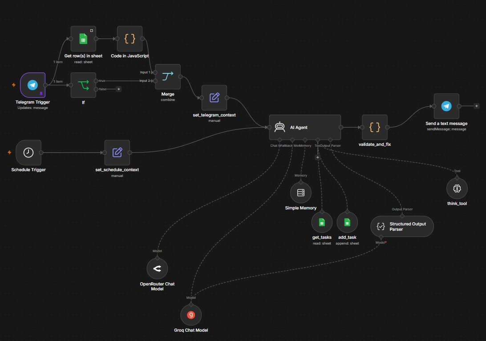
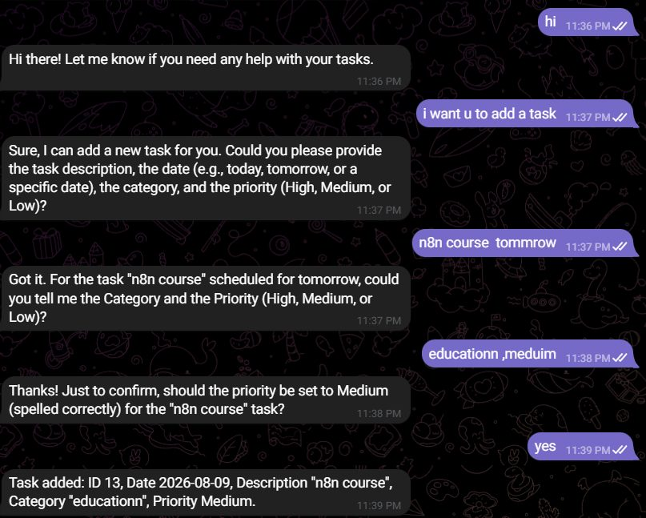
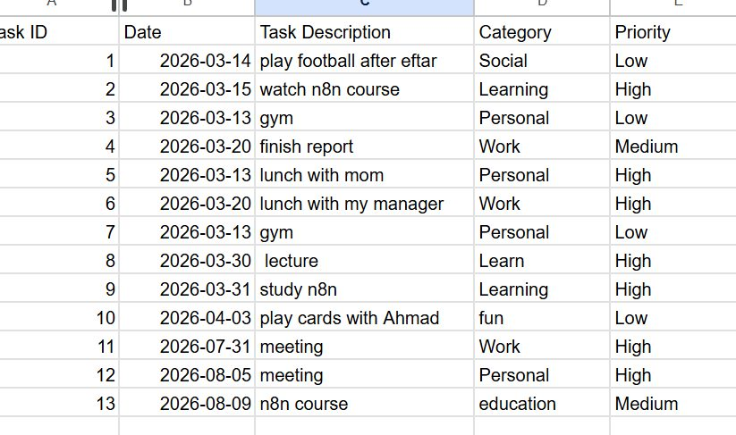
A task bot that saves to a spreadsheet is only useful if it never makes things up. The usual failure is the model filling in a due date or a priority the user never said. Once one wrong row is saved, you stop trusting the whole list.
A Telegram bot that manages a task list in Google Sheets, with one rule: it is not allowed to guess. A task is only saved once the date, description, category and priority are all there. If anything is missing, it asks a question instead of picking a default. The same bot also sends a short list of today's tasks every morning, grouped by priority.
Both the chat and the morning message go through the same agent. Only the instructions change depending on which one triggered it, so I keep one set of tools instead of building two separate workflows.
Today's date, tomorrow's date and the current time are passed in directly, set to Amman time. This is the part that usually breaks these bots, because "tomorrow" means nothing to a model that doesn't know today. A small script works out the next task ID from the rows already in the sheet, rather than asking the model to count. Another script cleans up the agent's reply before it goes back to Telegram, since an LLM can return plain text, JSON as text, or an object, and all three need to end up as one message. Models run on OpenRouter, with Groq set as a backup if the first one fails.
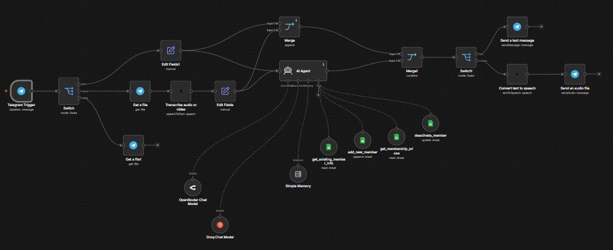
Front desk questions at a gym repeat all day: what plans are there, what do they cost, sign me up, cancel my membership. And people send voice notes as often as they type.
A Telegram assistant that answers membership questions by voice or text, and replies the same way you asked. It can look up a member, give current prices, add a new member, and cancel one, all against a live spreadsheet. That way the answers come from real records, not from something written into the prompt months ago.
Incoming messages are sorted by type. Voice notes are downloaded and turned into text by ElevenLabs; typed messages skip that step. Both then reach the same agent.
The agent gets four specific tools: read a member, read prices, add a member, cancel a member. It does not get open access to the spreadsheet. Keeping the tools narrow means everything it can do is written down and nothing else is possible. On the way out, the reply is turned back into speech if the question came in as a voice note.
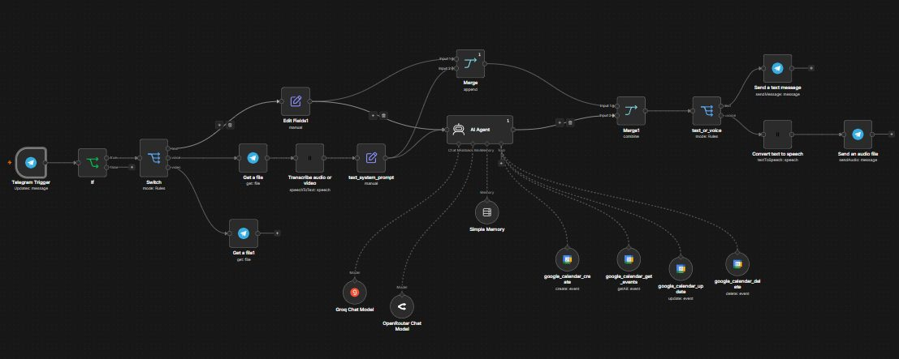
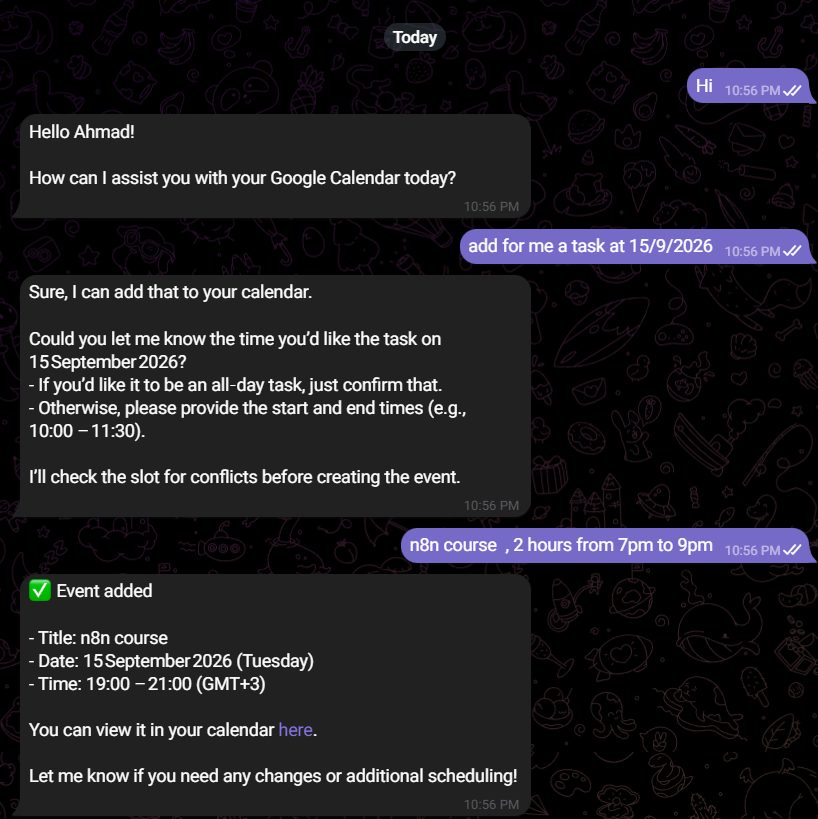
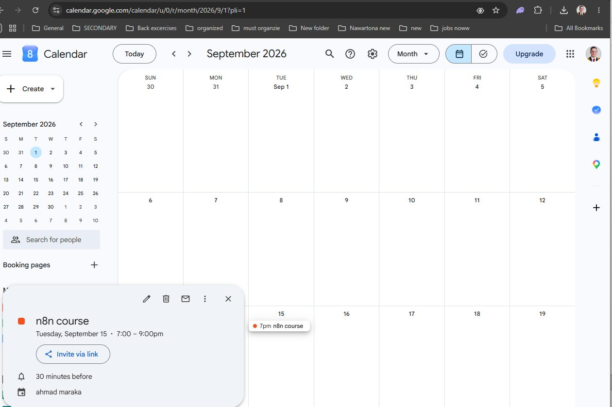
Booking something by hand means opening the calendar and filling in fields, when what you actually want to say is one sentence: "move my 3pm to Thursday".
An assistant you speak or type to on Telegram. It creates, reads, changes and deletes real calendar events, then tells you what it did.
Voice notes are turned into text with ElevenLabs first; typed messages go straight through. The agent has four separate calendar tools rather than one general one, so creating, listing, changing and deleting stay four different choices it has to make on purpose.
It remembers the conversation, which is what makes a follow-up like "make it an hour later" work. Replies come back as text or as audio, matching how you asked.
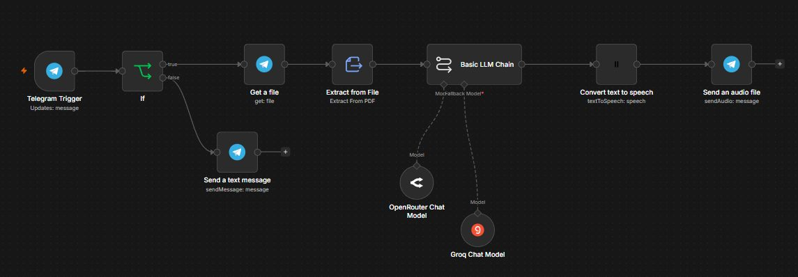
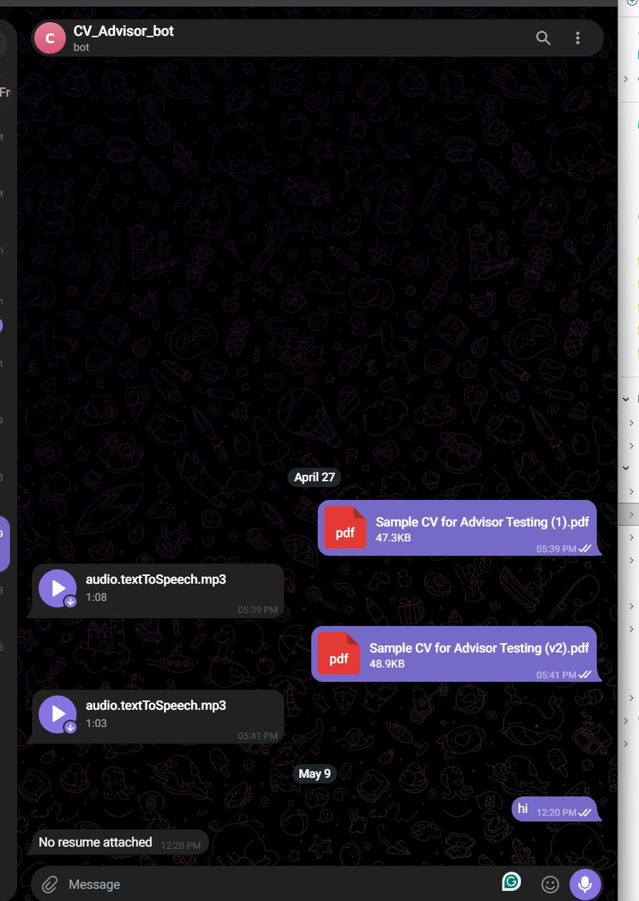
Getting a second opinion on your CV usually means sending it to someone and waiting. And reading a long block of feedback on a phone is not much fun either.
Send your CV as a PDF to a Telegram bot and get feedback back as a voice message you can just listen to.
The bot downloads the file from Telegram, pulls the text out of the PDF, and sends it to a model told to review it the way a recruiter would. Before any of that, a check confirms a real document actually arrived, so a stray text message doesn't cost a model call. The written feedback is then turned into speech with ElevenLabs and sent back as audio.
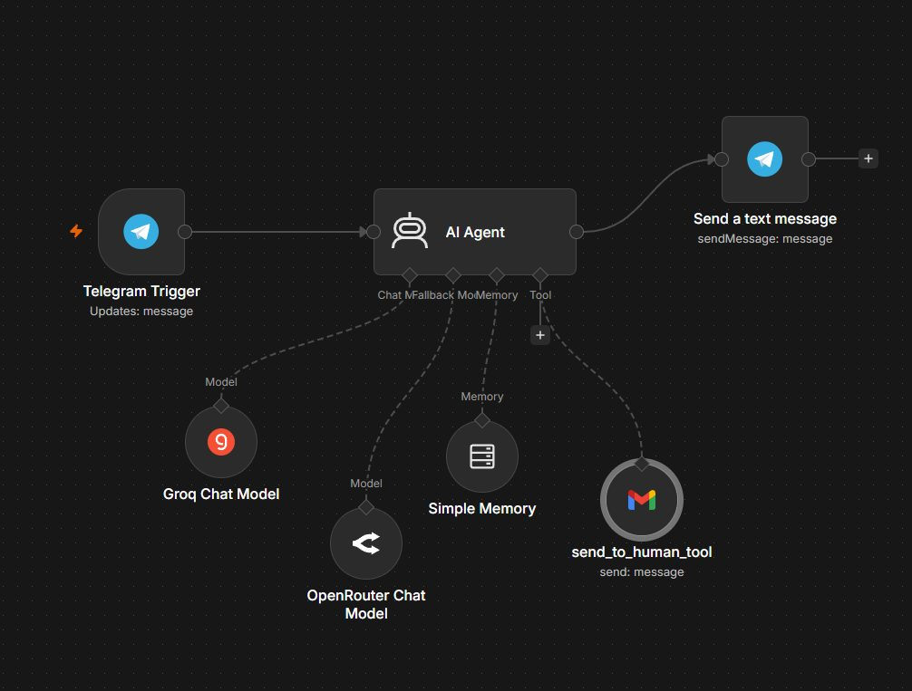
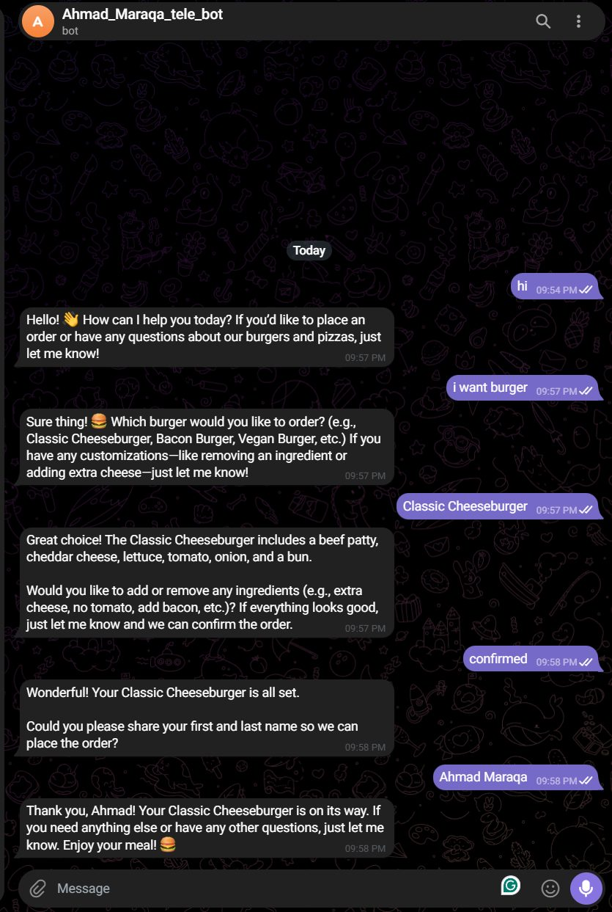
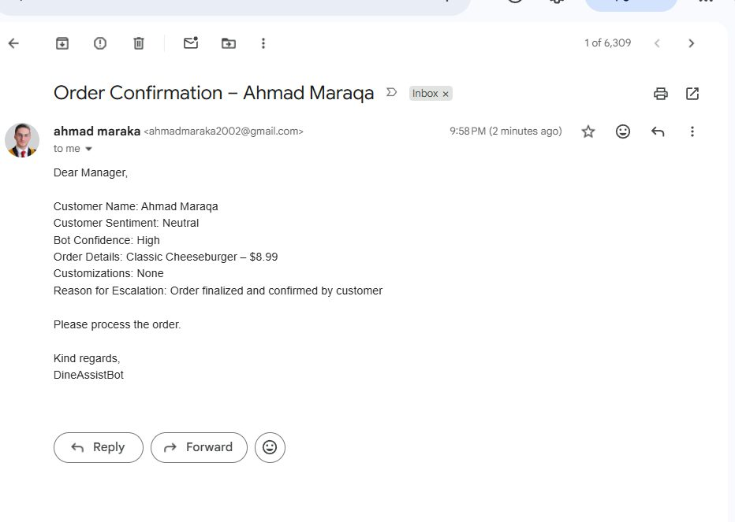
A customer bot that can only follow a script becomes a dead end the moment someone asks something new. A bot that makes something up instead of passing it on is worse.
A restaurant assistant that handles the normal questions itself, and treats "send this to a person" as a real action it can take. When it does, staff get an email with the full details.
An n8n agent on Telegram that remembers the conversation, with an email tool for handing over. Making the handover a tool rather than a last resort means the model chooses it on purpose, and the customer is told it happened instead of getting a vague non-answer.
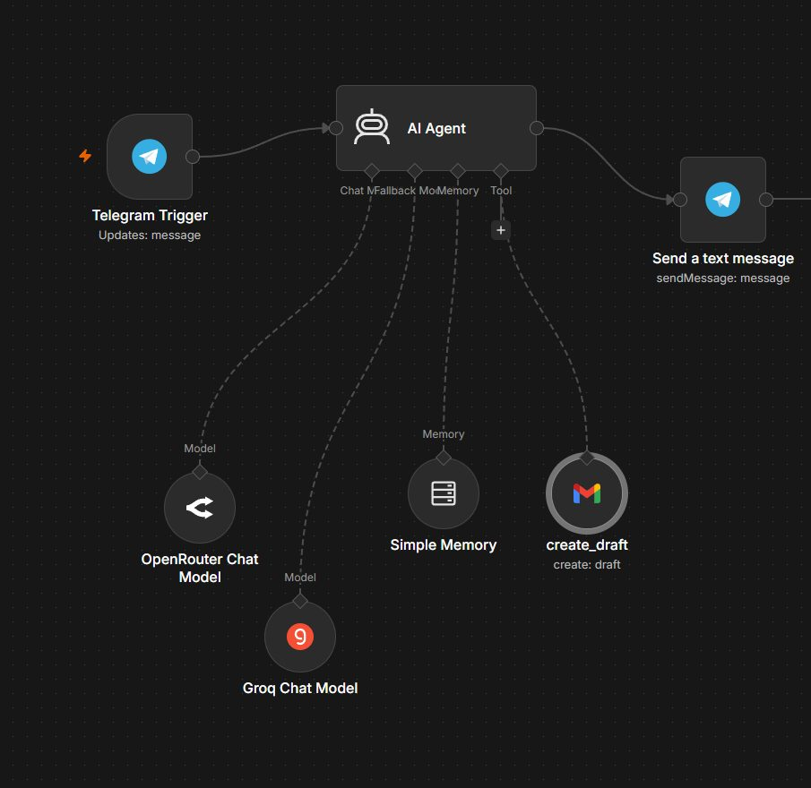
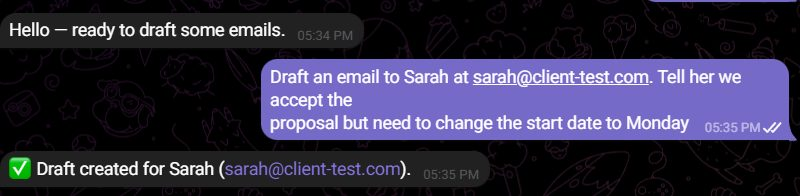
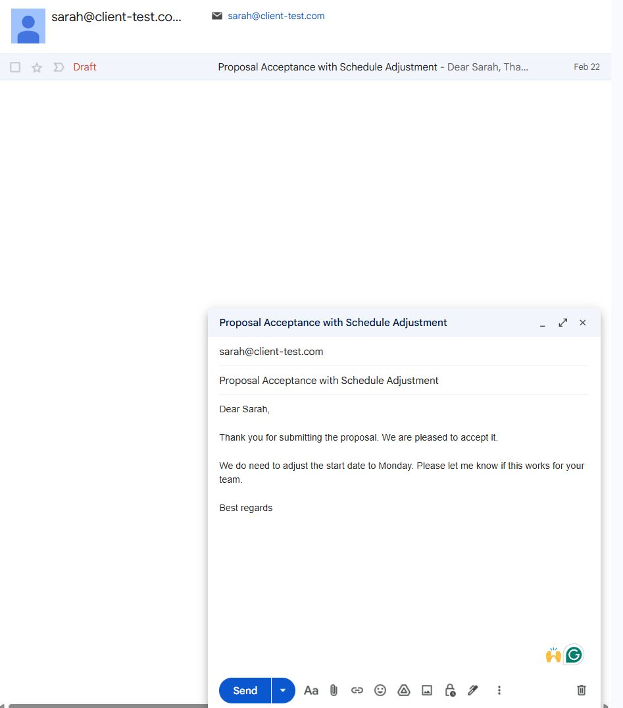
Writing routine emails is slow. But letting a model send email for you is a bad deal, because one bad send can't be taken back.
Describe the email in a Telegram message and the agent writes it into your Gmail drafts. It never sends. The last step is always you opening the draft and pressing send.
An n8n agent that remembers the conversation, with exactly one Gmail tool: create a draft. That is the whole idea. The action you can't undo simply isn't available to the model, so it can't happen by accident. Follow-up messages keep editing the same email.
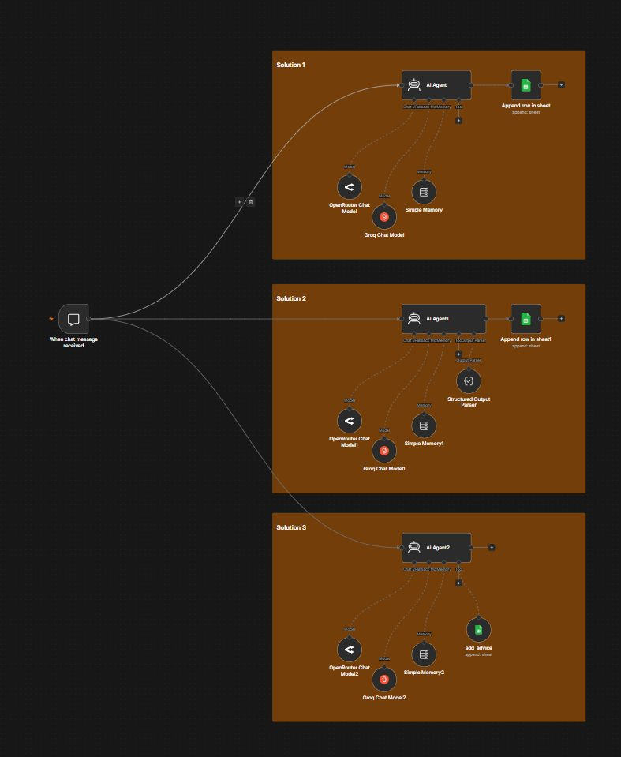
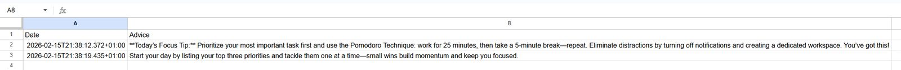
"An agent that writes to a database" can be built in several ways, and they only look different when something goes wrong. I wanted to see them next to each other instead of guessing.
The same small assistant, give one piece of advice and save it, built three ways on one screen. First: the agent's plain text gets saved by the next step. Second: the same thing, but the reply must match a fixed format first. Third: the agent is given the spreadsheet as a tool and saves the row itself.
Forcing the reply into a fixed format before it gets saved is what stops broken rows. Handing the agent the save tool gives it more freedom and more ways to get it wrong. That result is why the task manager above is built the way it is.
Dubbing a video into another language normally takes a whole manual chain: write out the speech, translate it, record a voice, then line it all up again.
A system that does all four steps on its own. It writes out the original speech, translates it, generates a new voice, and lines the new audio up with the original video.
Speech to text, then translation, then text to speech, plus a step that stretches or trims the timing to fit. That last part matters because the same sentence rarely takes the same time to say in two languages. Shown at SOFEX 2024 and the National Technology Parade 2024.
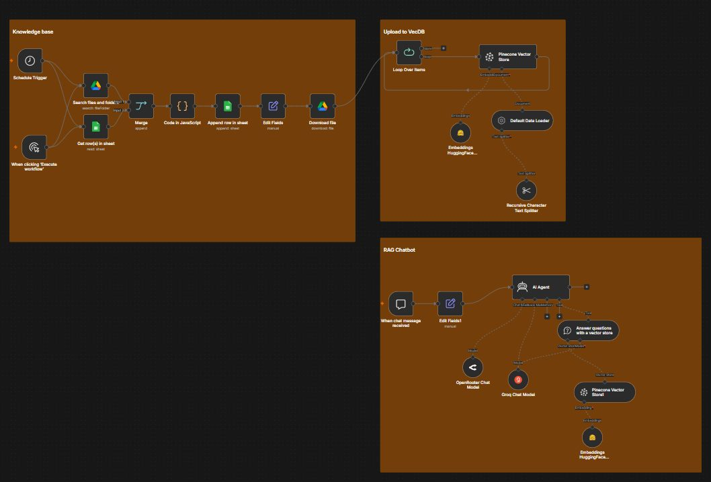
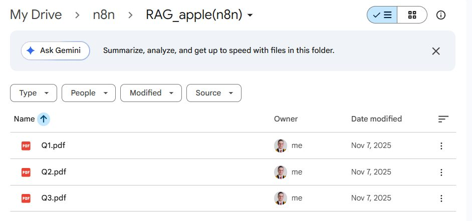
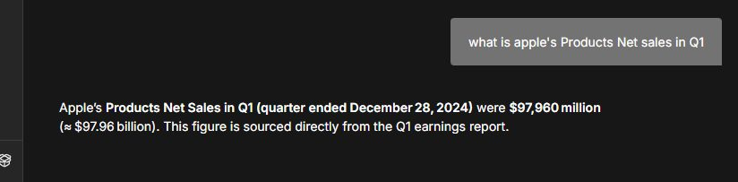
A RAG system that needs someone to press a button goes out of date the moment a new file is added to the folder. The easy fix is to reload everything on a timer, but then you pay to process the same documents over and over and end up with duplicates.
A knowledge base that keeps itself up to date. It checks a Google Drive folder on a schedule, loads only the files it hasn't seen before, and answers questions using only what has been loaded.
On each run it lists the Drive folder and compares it against a record of files already processed in Google Sheets. A small script works out which files are new, and only those go through the loop that downloads, splits and processes them. Documents are cut into chunks, turned into vectors using HuggingFace, and stored in Pinecone.
On the question side, the search is given to the agent as a tool instead of being pushed into every prompt. So the agent decides when it actually needs to look something up. Models run on OpenRouter with Groq as a backup.
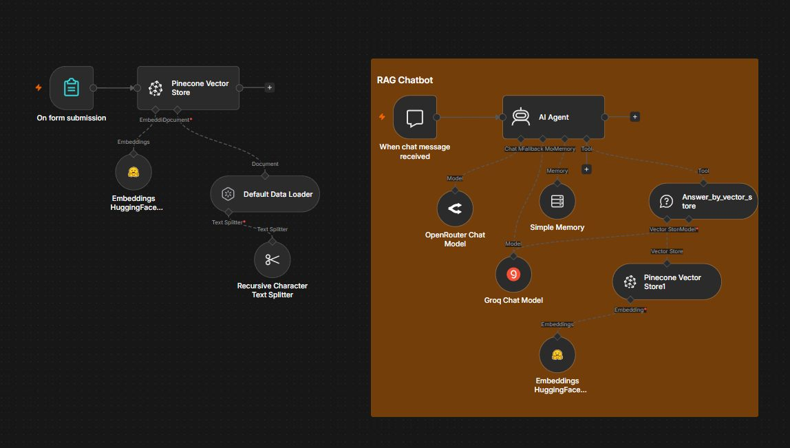
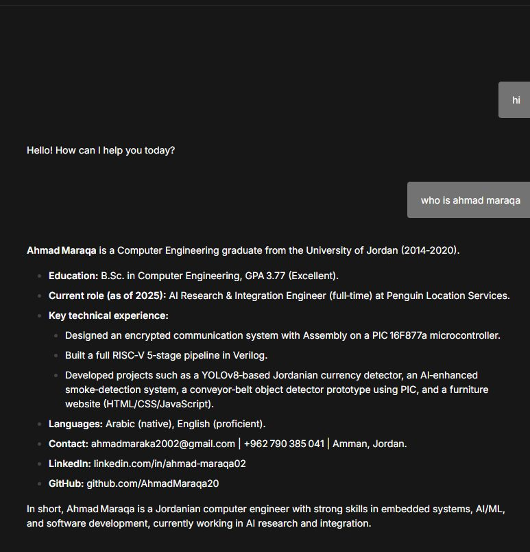
Asking questions about one specific file you own, where the answer has to come from that file and not from whatever the model already knows.
Upload a file through a web form, then chat with it straight away. The file is processed the moment you submit it, and the assistant answers from its contents.
An n8n form handles the upload. The document is cut into chunks, turned into vectors with HuggingFace, and saved to Pinecone. A separate chat window runs an agent that remembers the conversation and reaches the file through a search tool. I built this first, then built the self-updating version above on top of what it taught me.
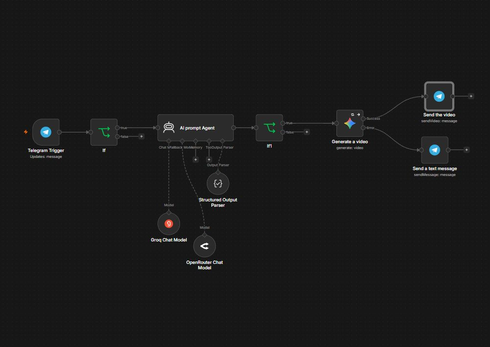
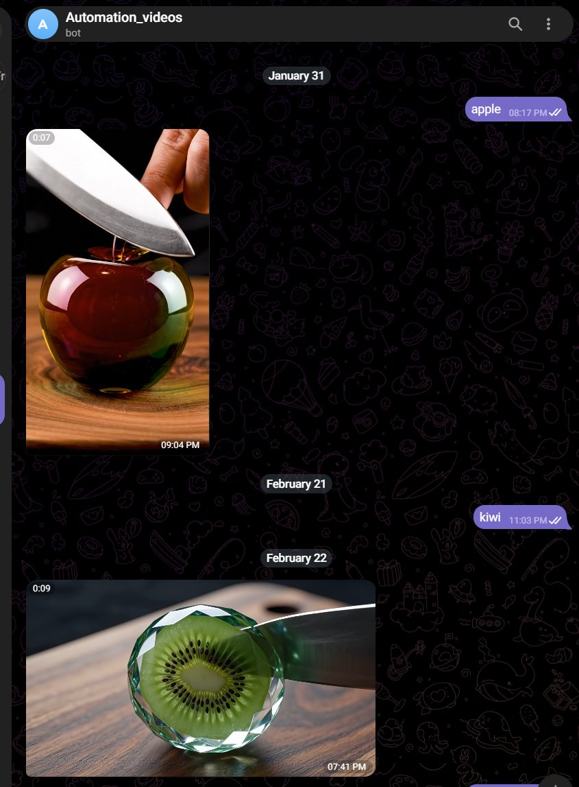
Video models need long, very detailed prompts to produce anything good. Nobody wants to write one of those by hand every time. Generating a video is also slow and costs money, so sending a weak prompt through wastes both.
Send the bot one word, the name of a fruit, and it sends back a finished cinematic clip of that fruit being sliced. All the prompt writing happens in between, out of sight.
An agent turns the single word into a long, detailed video prompt following a fixed style. It returns two things in a set format: the prompt itself, and a true/false answer for whether the word was actually a fruit. If it wasn't, the bot replies with an error instead of paying for a video nobody asked for. There is also a check at the very start that the message came from the owner's chat, so nobody else can run up the bill. Video generation runs on Google Veo 3.
A normal classifier always picks something. Its scores are forced to add up to 100%, so an image of a cat shown to a model trained on dogs and horses still comes back confidently labelled as one of them. There is no option to say "this is none of them".
Two ways around it, worked through in the repository. One is a Bayesian neural network, which carries how unsure it is as part of the answer. The other is scoring every class on its own instead of making them compete, so all the scores can come back low at once and the model can reject the input.
The repository has the full explanation plus a notebook with the second approach implemented. It's a written study rather than an app, so it's linked instead of shown in screenshots.
Client work. I describe the engineering only. No diagrams, no workflow files, no client details.
Sending WhatsApp messages at scale on the official API means living with its rules. Message templates need approval before you can use them. There are limits on how fast you can send. Delivery updates arrive out of order. And any image you upload stops working after 30 days, which quietly breaks every message that points at it.
A set of workflows sitting between a web app and the WhatsApp Business Cloud API. They handle sending, incoming replies, scheduled reminders, and the background jobs that stop the whole thing falling apart over time. MongoDB holds the truth about what was sent, what was delivered, and who replied.
Messages go out as approved templates. Replies come back on webhooks and get matched to the right record in MongoDB.
Every webhook is checked before it is trusted. There is a shared secret passed between the app and the workflows, and a signature check on the callbacks coming from Meta. These endpoints have to be publicly reachable to work at all, so the check is what stops anyone else from driving them.
Large sends are broken into batches with pauses between them instead of being fired all at once, which is what keeps them inside the rate limits. Scheduled jobs cover anything based on time: reminders for people who haven't replied, follow-ups, and expiry. The 30-day image problem is handled by a job that re-uploads the files and updates the stored references before they run out. A cleanup job removes files nobody points at any more, so the server disk doesn't slowly fill up.
Running and looking after n8n myself on a Hostinger VPS: setting it up, managing credentials, HTTPS, making sure nothing is lost on restart, and keeping scheduled workflows alive.
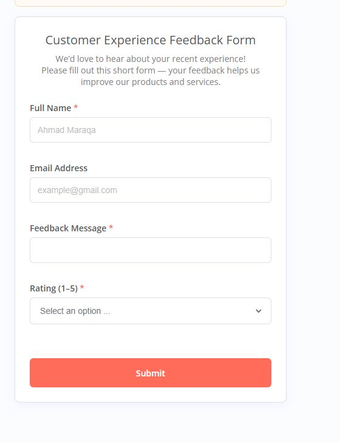
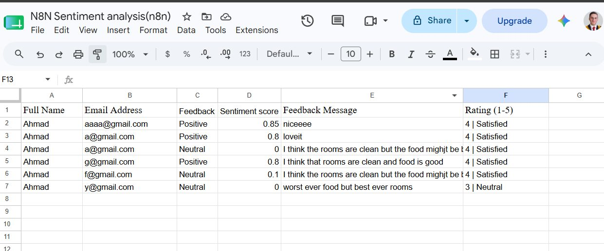
Written feedback is the most useful part of a survey and the hardest to use. Nobody reads a thousand comments, and while they're still paragraphs you can't sort or count them.
Every answer is read the moment it's submitted and lands in the spreadsheet with a sentiment label already on it. So the results can be sorted and counted without anyone going through them.
An n8n form sends each answer to a model that must reply in a fixed format, not free text. That's the difference between a column you can filter and one you can't. The label is then joined back onto the original answer so both sit on the same row.
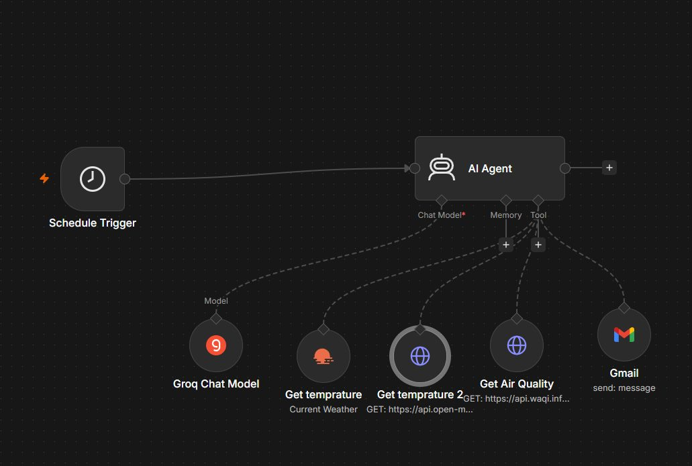
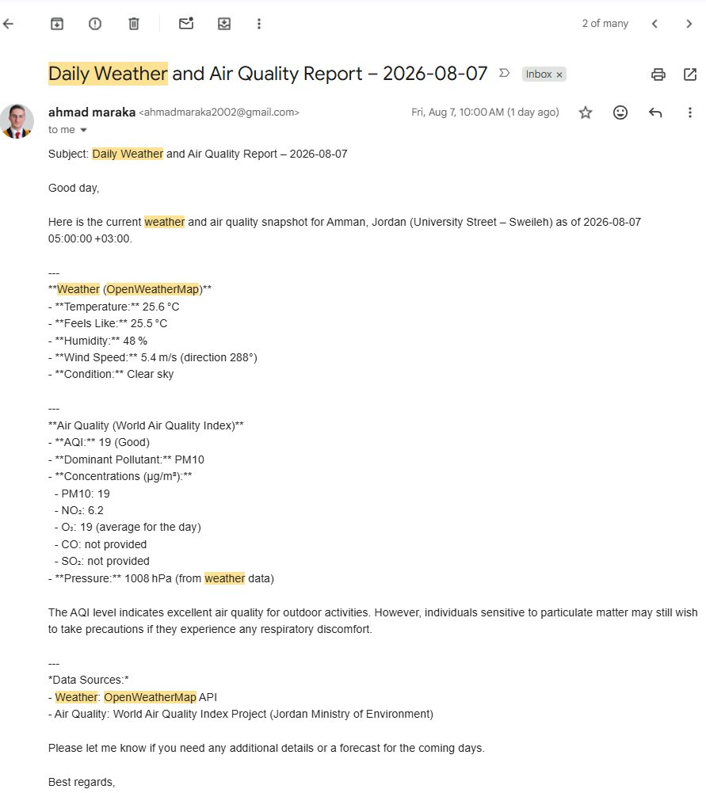
Weather and air quality come from different services, and neither gives you advice. An air quality number on its own doesn't tell you whether to go for a run.
A daily email for Amman that pulls both, reads them together, and writes a short summary of what the numbers actually mean for the day.
An agent runs on a schedule with four tools: weather, air quality for a specific Amman monitoring station, a second weather source, and Gmail to send. The second weather source exists only as a backup, and the agent is told in writing to use it only if the first one fails. Giving the agent the data sources as tools, rather than fetching everything first, means it pulls what it needs and writes the summary in one go.
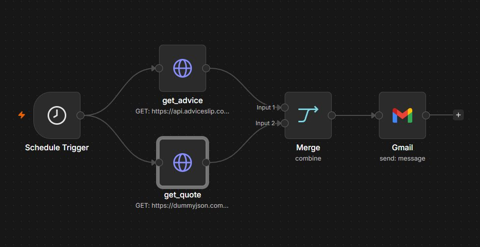
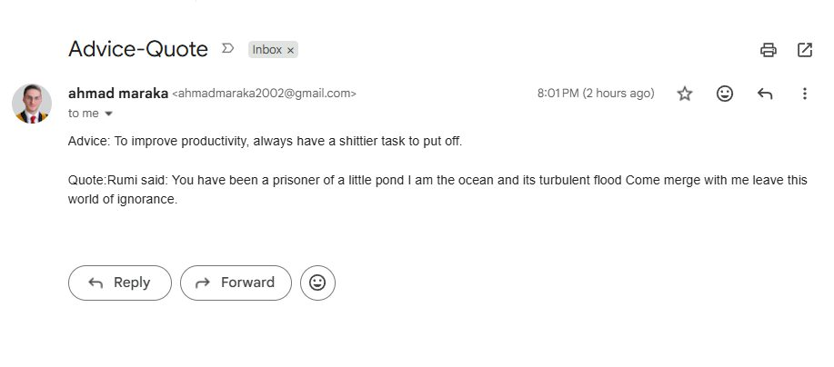
Putting together a regular email from a few different sources by hand. The kind of small job that never gets done consistently.
A workflow that runs on a timer, calls two public APIs, joins the answers into one message, and sends it.
A timer, two API calls running side by side, a step that joins them into one item, and Gmail to send. Kept small on purpose. The reusable part is the shape: call several things at once, join them, send one message.
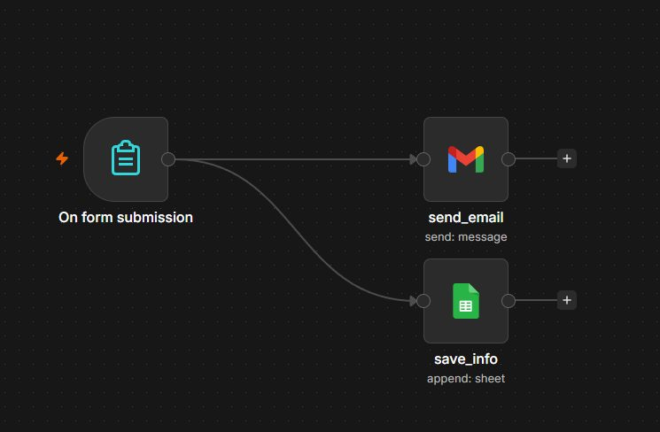
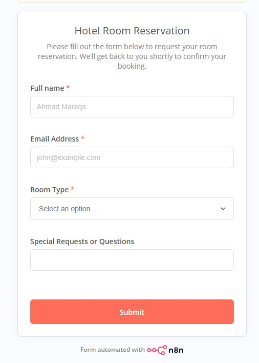
Booking requests that arrive without being written down anywhere, and guests left wondering whether the request went through at all.
A booking form that saves every request to a shared sheet and emails the guest a confirmation right away.
An n8n form does two things at once: writes the row to Google Sheets and sends the confirmation by Gmail. It's a small workflow, and the point is that recording it and confirming it happen together, so nothing sits unnoticed.
Finding and naming Jordanian money in a photo. Notes and coins together, in normal room lighting, at whatever angle the picture was taken. No public dataset for this existed.
A model that finds every note and coin in a photo, marks each one with its value, and counts them up. It runs as a web app where you upload a picture and get the marked-up result back.
We collected the photos ourselves, then grew the dataset by rotating and re-lighting them. That step matters more than it sounds: when all your photos come from the same few sessions, the model only learns those conditions. Detection uses YOLOv8, which finds everything in one pass and is fast enough for live use. The trained model is deployed as a Streamlit app.
Spotting a fire from sensor readings early enough to be worth something. One model gives you a yes or a no and no sense of how sure it is, which for a safety warning is exactly what you want to know.
A web app that takes thirteen sensor readings — temperature, humidity, gas and air quality levels, pressure, and particle counts — and shows what seven different models each think. When all seven agree, that means far more than any one of them saying so alone.
Seven models trained on a public smoke detection dataset: logistic regression, decision tree, random forest, naive Bayes, gradient boosting, a voting ensemble that combines several of them, and a neural network built in Keras. All seven are saved and loaded by the app, which runs every one on your input and shows the answers side by side instead of hiding any disagreement behind a single number. Deployed on Streamlit.
Working out where something physically is, in real time, using nothing but Bluetooth signal strength. That signal bounces off walls, gets blocked by objects, and changes depending on which way a person is standing.
Trained and compared several standard models to turn signal readings into a location zone, then checked which ones held up on real collected data rather than a clean test set.
KNN, decision trees and random forests, tested against BLE and sensor data collected during the indoor positioning work at Penguin Location Services.
Standard models give you a zone and nothing else. In positioning, how sure you are matters as much as the answer itself, and that information was being thrown away.
A probabilistic model built for this specific setup, which keeps how confident it is as part of the answer instead of reducing everything to one label.
Built as an alternative to the standard models above, and tested on the same collected Bluetooth data so the two could be compared directly.
The hardware and systems background underneath the AI work.
A full five-stage RISC-V processor pipeline built in Verilog: fetch, decode, execute, memory and write-back.
A conveyor belt that detects objects as they pass, built around a PIC microcontroller.
An encrypted serial link between two devices, built on the USART module of a PIC16F877A and written in assembly.
A furniture shop website built with plain HTML, CSS and JavaScript.
I'm open to AI and machine learning roles, and to freelance automation work.